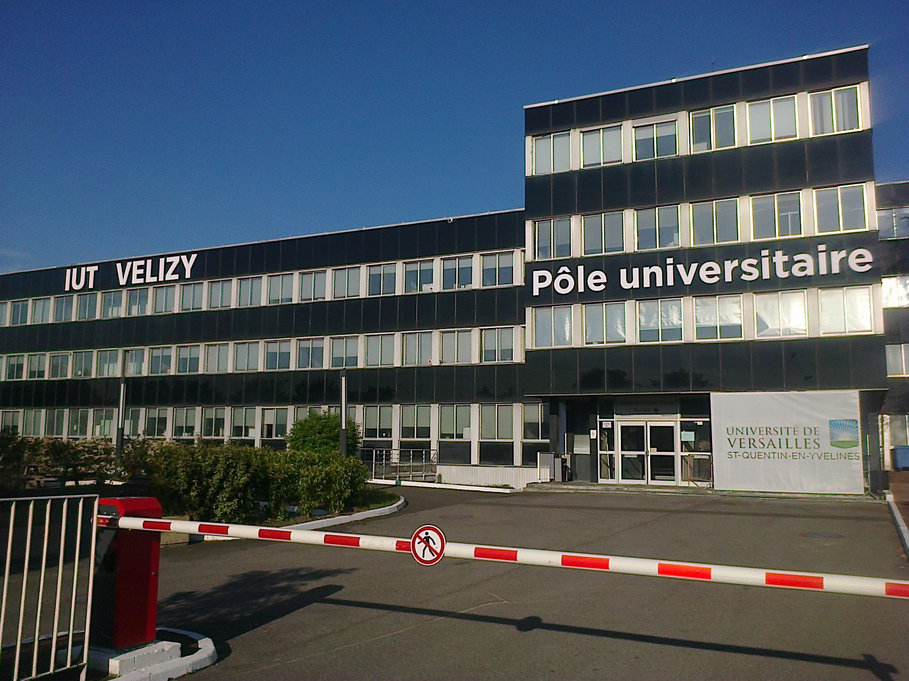

Formation
2018 - 2021
Baccalauréat général Mathématiques, Numérique et Sciences de l'Informatique
Lycée
Baccalauréat général Mathématiques, Numérique et Sciences de l'Informatique
Option : Mathémaitques expertes
Lycée de Villaroy, Guyancourt, 78280
2023 - 2026
IUT
BUT Informatique Parcours réalisation d’applications - conception, développement, validation
IUT de Vélizy - Université Versailles Saint Quentin en Yvelines, Vélizy, 78640
